Il marchio agrozootecnico di Produttori Arborea

01 · Il marchio
- A schermo
- «Il marchio agrozootecnico di Produttori Arborea» · bovino, ovino e caprino · marchio Meridoro in piede
- Voce
- Meridoro è il marchio agrozootecnico di Produttori Arborea.
- Regia
- Fondo oro con la texture di icone in trasparenza, come nei caroselli Meridoro. Titolo in campagna in alto a sinistra, gli animali al tratto salgono uno dopo l'altro.